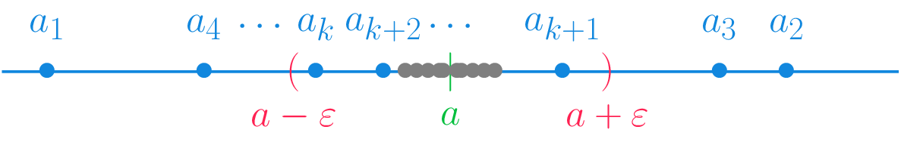

Sucesiones de números reales
Análisis Matemático
Concepto de sucesión
Definición 1 (Sucesión de números reales) Una sucesión de números reales es una aplicación \(a:\mathbb{N}\to \mathbb{R}\) que asigna a cada número natural \(n\) un número real \(a_n\), conocido como término de la sucesión.
Utilizaremos la notación \((a_n)_{n=1}^\infty\), donde \(a_n=a(n)\) con \(n\in\mathbb{N}\), o simplemente \(a_n\), para referirnos a la sucesión definida por la aplicación \(a\).
Ejemplo 1 La sucesión \(\left(\frac{1}{n}\right)_{n=1}^\infty\) está formada por los términos \(\frac{1}{1}, \frac{1}{2}, \frac{1}{3}, \ldots\).
No hay que confundir los términos de una sucesión \((a_n)_{n=1}^\infty\), que tienen orden, con el conjunto de los valores de la sucesión \(\{a_n:n\in\mathbb{N}\}\) que no tiene orden.
Ejemplo 2 La sucesión \(\left((-1)^n\right)_{n=1}^\infty\) está formada por los términos \(-1,1,-1,1,\ldots\), mientras que \(\{a_n:n\in\mathbb{N}\}=\{-1,1\}\).
Definición recursiva
Ejemplo 3 La sucesión del ejemplo anterior también se puede definir recursivamente de la siguiente manera, \(a_1=-1\) y \(a_{n+1}=(-1)a_n\) \(\forall n\in\mathbb{N}\).
Operaciones con sucesiones
Definición 2 (Operaciones con sucesiones) Dadas dos sucesiones de números reales \((a_n)_{n=1}^\infty\) y \((b_n)_{n=1}^\infty\), se definen las siguientes operaciones:
Suma: \((a_n)_{n=1}^\infty + (b_n)_{n=1}^\infty = (a_n+b_n)_{n=1}^\infty\).
Diferencia: \((a_n)_{n=1}^\infty - (b_n)_{n=1}^\infty = (a_n-b_n)_{n=1}^\infty\).
Producto: \((a_n)_{n=1}^\infty (b_n)_{n=1}^\infty = (a_nb_n)_{n=1}^\infty\).
División: \(\dfrac{(a_n)_{n=1}^\infty}{(b_n)_{n=1}^\infty} = \left(\dfrac{a_n}{b_n}\right)_{n=1}^\infty\), siempre y cuando \(b_n\neq 0\) \(\forall n\in\mathbb{N}\).
Producto por escalar: \(c(a_n)_{n=1}^\infty = (ca_n)_{n=1}^\infty\).
Ejemplo 4 Dadas las sucesiones \((n)_{n=1}^\infty\) y \(((-1)^n)_{n=1}^\infty\) se tiene:
\[\begin{align*} (n)_{n=1}^\infty + ((-1)^n)_{n=1}^\infty &= (n + (-1)^n)_{n=1}^\infty = (0, 3, 2, 5, 4, \ldots)\\ (n)_{n=1}^\infty ((-1)^n)_{n=1}^\infty &= (n (-1)^n)_{n=1}^\infty = (-1, 2, -3, 4, -5, \ldots) \end{align*}\]
Límite de una sucesión
Definición 3 (Límite de una sucesión) Dada una sucesión \((a_n)_{n=1}^\infty\), se dice que un número \(a\in\mathbb{R}\) es el límite de la sucesión, si para cada \(\varepsilon>0\) existe un \(k\in\mathbb{N}\) a partir del cuál todos los términos de la sucesión caen en el entorno \((a-\varepsilon, a+\varepsilon)\), es decir, \(|a_n-a|<\varepsilon\) \(\forall n\geq k\).
Si \(a\) es el límite de la sucesión, se dice que la sucesión converge a \(a\), y se denota \(\lim_{n\to\infty}a_n = a\).

Ejemplo 5 La sucesión \((\frac{1}{n})_{n=1}^\infty\) es convergente y \(\lim_{n\to\infty}\frac{1}{n} = 0\), ya que para cualquier \(\varepsilon>0\), por la propiedad arquimediana, se tiene que existe un \(k\in\mathbb{N}\), tal que \(\frac{1}{k}<\varepsilon\), de manera que para cualquier \(n>k\), se tiene \(|\frac{1}{n}-0| = \frac{1}{n} <\frac{1}{k}<\varepsilon\).
Sin embargo, la sucesión \((n)_{n=1}^\infty\) diverge.
Unicidad el límite
Teorema 1 Una sucesión de números reales puede tener a lo sumo un límite.
Definición 4 (Cola de una sucesión) Dada una sucesión de números reales \((a_n)_{n=1}^\infty\) y \(m\in\mathbb{N}\), se define la cola \(m\) de la sucesión, como la sucesión \((a_{m+n})_{n=1}^\infty = (a_{m+1}, a_{m+2},\ldots)\).
Proposición 1 Dada una sucesión de números reales \((a_n)_{n=1}^\infty\) y \(m\in\mathbb{N}\), la cola \((a_{m+n})_{n=1}^\infty\) converge si y solo si \((a_n)_{n=1}^\infty\) converge, y en tal caso, \(\lim_{n\to\infty}a_n=\lim_{n\to\infty}a_{m+n}\).
Proposición 2 Sean \((a_n)_{n=1}^\infty\) y \((b_n)_{n=1}^\infty\) dos sucesiones de números reales tales que \((b_n)_{n=1}^\infty\) converge a 0. Si existe \(a, c\in\mathbb{R}\) con \(c>0\) tal que \(|a_n-a| < c|b_n|\) \(\forall n\in \mathbb{N}\), entonces \((a_n)_{n=1}^\infty\) converge a \(a\).
Ejemplo 6 Veamos que la sucesión \(\left(\frac{1}{2^n}\right)_{n=1}^\infty\) converge a 0. Para cualquier \(n\in\mathbb{N}\) se cumple que \(0<n<2^n\), de donde se deduce \(0<\frac{1}{2^n}<\frac{1}{n}\), lo que equivale a \(|\frac{1}{2^n}-0|<\frac{1}{n}\). Así pues, aplicando el teorema anterior y tomando \(c=1\), se concluye que \(\lim_{n\to\infty}\frac{1}{2^n}=0\).
Veamos ahora que \(\lim_{n\to\infty}n^{1/n}=1\). Aplicando el teorema del binomio, para cualquier \(n\in\mathbb{N}\), con \(n>1\), se tiene que
\[\begin{align*} \left(1+\sqrt{\frac{2}{n}}\right)^n &= 1^n + \binom{n}{1}1^{n-1}\sqrt{\frac{2}{n}} + \binom{n}{n}1^{n-2}\left(\sqrt{\frac{2}{n}}\right)^2 + \cdots \\ & > 1 + n\sqrt{\frac{2}{n}} + \frac{n(n-1)}{2!}\frac{2}{n} = 1 + \sqrt{\frac{2n^2}{n}} + n -1 \\ &= \sqrt{2n} + n > n \end{align*}\]
Así pues,
\[ n^{1/n} < 1+\sqrt{\frac{2}{n}} \Leftrightarrow n^{1/n} - 1 < \sqrt{2}{\frac{1}{\sqrt{n}}} \Leftrightarrow |n^{1/n} - 1| < \sqrt{2}\frac{1}{\sqrt{n}}, \]
y como \(\sqrt{2}>0\) y \(\lim_{n\to\infty}\frac{1}{\sqrt{n}}=0\), por la proposición anterior teorema anterior se tiene que \(\lim_{n\to\infty} n^{1/n} = 1\).
Sucesión acotada
Definición 5 (Sucesión acotada) Se dice que una sucesión de números reales \((a_n)_{n=1}^\infty\) está acotada si existe \(c>0\) tal que \(|a_n|\leq c\) \(\forall n\in\mathbb{N}\).
Teorema 2 Toda sucesión de números reales convergente está acotada.
Ejemplo 7 La sucesión \((n)_{n=1}^\infty\) diverge ya que no está acotada. Si estuviese acotada existiría un \(c>0\) tal que \(|n|\leq c\) \(\forall n\in\mathbb{N}\), lo que infringe la propiedad arquimediana.
El otro sentido de la implicación no se cumple, es decir, no toda sucesión acotada es convergente. Por ejemplo, la sucesión \(((-1)^n)_{n=1}^\infty\).
Álgebra de límites
Proposición 3 Sean \((a_n)_{n=1}^\infty\) y \((b_n)_{n=1}^\infty\) dos sucesiones de números reales tales que \((a_n)_{n=1}^\infty\) converge a \(a\) y \((b_n)_{n=1}^\infty\) converge a \(b\). Entonces se cumple:
\((a_n)_{n=1}^\infty\) + \((b_n)_{n=1}^\infty\) converge a \(a+b\).
\((a_n)_{n=1}^\infty\) - \((b_n)_{n=1}^\infty\) converge a \(a-b\).
\((a_n)_{n=1}^\infty\) \((b_n)_{n=1}^\infty\) converge a \(ab\).
\(c(a_n)_{n=1}^\infty\) converge a \(ca\).
Si \(b_n\neq 0\) \(\forall n\in\mathbb{N}\) y \(b\neq 0\), \(\frac{(a_n)_{n=1}^\infty}{(b_n)_{n=1}^\infty}\) converge a \(\frac{a}{b}\).
Ejemplo 8 Veamos que la sucesión \(\left(\frac{2n+1}{n+3}\right)_{n=1}^\infty\) converge a 2.
\[\begin{align*} \lim_{n\to\infty}\frac{2n+1}{n+3} &= \lim_{n\to\infty}\frac{2+\frac{1}{n}}{1+\frac{3}{n}} = \frac{\lim_{n\to\infty}2+\frac{1}{n}}{\lim_{n\to\infty}1+\frac{3}{n}} = \\ &=\frac{\lim_{n\to\infty} 2 + \lim_{n\to\infty}\frac{1}{n}}{\lim_{n\to\infty} 1 + \lim_{n\to\infty}\frac{3}{n}} = \frac{2+0}{1+0} = 2. \end{align*}\]
Teorema 3 (Compresión de sucesiones convergentes) Dadas tres sucesiones de números reales \((a_n)_{n=1}^\infty\), \((b_n)_{n=1}^\infty\) y \((c_n)_{n=1}^\infty\), tales que \(a_n\leq b_n\leq c_n\) \(\forall n\in\mathbb{N}\), si \((a_n)_{n=1}^\infty\) y \((c_n)_{n=1}^\infty\) convergen a \(a\), entonces \((b_n)_{n=1}^\infty\) converge a \(a\).
Ejemplo 9 Veamos que la sucesión \(\left(\frac{2n}{n^2+1}\right)_{n=1}^\infty\) converge a 0. Para ello basta con ver que
\[ 0\leq \frac{2n}{n^2+1} \leq \frac{2n}{n^2}\leq \frac{2}{n}\ \forall n\in\mathbb{N} \]
y que \(\lim_{n\to\infty} \frac{2}{n}=\lim_{n\to\infty} 0 = 0\), de manera que aplicando el teorema anterior de compresión se tiene que \(\lim_{n\to\infty} \frac{2n}{n^2+1}=0\).
Veamos ahora que la sucesión \(\left(\frac{\operatorname{sen}(n)}{n}\right)_{n=1}^\infty\) también converge a 0. De nuevo basta con ver que, como \(-1\leq \operatorname {sen}(n)\leq 1\) \(\forall n\in\mathbb{N}\),
\[ \frac{-1}{n}\leq \frac{\operatorname{sen}(n)}{n} \leq \frac{1}{n}\ \forall n\in\mathbb{N} \]
y que \(\lim_{n\to\infty} \frac{-1}{n}=\lim_{n\to\infty} \frac{1}{n}= 0\), de manera que aplicando el teorema anterior de compresión se tiene que \(\lim_{n\to\infty} \frac{\operatorname{sen}(n)}{n}=0\).
Proposición 4 (Criterio del cociente) Si \((a_n)_{n=1}^\infty\) es una sucesión de números reales estrictamente positivos tal que la sucesión \(\left(\frac{a_{n+1}}{a_n}\right)_{n=1}^\infty\) converge a \(a<1\), entonces \((a_n)_{n=1}^\infty\) converge a 0.
Ejemplo 10 Veamos que la sucesión \(\left(\frac{n}{2^n}\right)_{n=1}^\infty\) converge a 0.
\[\begin{align*} \lim_{n\to\infty}\frac{a_{n+1}}{a_n} &= \lim_{n\to\infty}\frac{\frac{n+1}{2^{n+1}}}{\frac{n}{2^n}} = \lim_{n\to\infty}\frac{1}{2}\frac{n+1}{n} \\ &= \lim_{n\to\infty} \frac{1}{2}\left(\frac{1}{n}+1\right) = \lim_{n\to\infty} \frac{1}{2}+\frac{1}{2n} \\ &= \lim_{n\to\infty} \frac{1}{2} + \lim_{n\to\infty} \frac{1}{2n} = \frac{1}{2}<1. \end{align*}\]
Así pues, por la proposición anterior, \(\lim_{n\to\infty}\frac{n}{2^n} = 0\).
Sucesiones monótonas
Definición 6 (Sucesión monónota) Dada una sucesión de números reales \((a_n)_{n=1}^\infty\):
- Se dice que es una sucesión creciente, si \(a_n\leq a_{n+1}\) \(\forall n\in\mathbb{N}\), y se dice que es estrictamente creciente si \(a_n< a_{n+1}\) \(\forall n\in\mathbb{N}\).
- Se dice que es una sucesión decreciente, si \(a_n\geq a_{n+1}\) \(\forall n\in\mathbb{N}\), y se dice que es estrictamente decreciente si \(a_n>a_{n+1}\) \(\forall n\in\mathbb{N}\).
- Se dice que es una sucesión monótona, si es creciente o decreciente.
Ejemplo 11 Las sucesiones \((2n)_{n=1}^\infty\) y \((n^2)_{n=1}^\infty\) son estrictamente crecientes y la sucesión \(\left(\frac{1}{n}\right)_{n=1}^\infty\) es estrictamente decreciente.
La sucesión \((a^n)_{n=1}^\infty\) es estrictamente creciente si \(a>1\) y estrictamente decreciente si \(0<a<1\). Si \(a=1\) la sucesión es, a la vez, creciente y decreciente, ya que en realidad es constante.
Sin embargo, la sucesión \(((-2)^n)_{n=1}^\infty\) no es monótona.
Convergencia de sucesiones monótonas
Teorema 4 (Convergencia de una sucesión monótona) Una sucesión de números reales monótona \((a_n)_{n=1}^\infty\) converge si y solo si está acotada. Además se cumple que:
- Si \((a_n)_{n=1}^\infty\) es una sucesión creciente y acotada, entonces \(\lim_{n\to\infty}a_n = \sup(\{a_n:n\in\mathbb{N}\})\).
- Si \((a_n)_{n=1}^\infty\) es una sucesión decreciente y acotada, entonces \(\lim_{n\to\infty}a_n = \inf(\{a_n:n\in\mathbb{N}\})\).
Ejemplo 12 Veamos que la sucesión \(\left(\frac{1}{\sqrt{n}}\right)_{n=1}^\infty\) converge a 0. La sucesión es decreciente ya que para cualquier \(n\in\mathbb{N}\) se tiene que \(n<n+1 \Rightarrow \sqrt{n}< \sqrt{n+1} \Rightarrow \frac{1}{\sqrt{n}}> \frac{1}{\sqrt{n+1}}\). Como además está acotada inferiormente por el \(0\), se tiene que \(\lim_{n\to\infty}\frac{1}{\sqrt{n}} = \inf\left(\left\{\frac{1}{\sqrt{n}}: n\in\mathbb{N}\right\}\right)= 0\).
Ejemplo 13 Sea la sucesion definida recursivamente de la siguiente manera: \(a_1=1\) y \(a_{n+1}= \sqrt{2a_n}\). Veamos que converge a \(2\).
En primer lugar, veremos que es una sucesión creciente por inducción. Para \(n=1\) se tiene que \(a_1=1<\sqrt{2}=a_2\). Supongamos ahora que \(a_n<a_{n+1}\). Entonces, \(a_{n+2}=\sqrt{2a_{n+1}}>\sqrt{2a_n}=a_{n+1}\), de manera que la sucesión es creciente.
En segundo lugar, veremos, también por inducción, que \(a_n\leq 2\) \(\forall n\in\mathbb{N}\). Para \(n=1\) se tiene que \(a_1=1<2\). Supongamos ahora que \(a_n<2\). Entonces, \(a_{n+1}=\sqrt{2a_n}=\sqrt{2}\sqrt{a_n}<\sqrt{2}\sqrt{2}=2\). Luego, la sucesión está acotada, y por el teorema anterior, converge. Para calcular el límite, aprovechando la definición recursiva de la sucesión, se tiene
\[\begin{align*} a &=\lim_{n\to\infty}a_n = \lim_{n\to\infty} a_{n+1} = \lim_{n\to\infty} \sqrt{2a_n} = \lim_{n\to\infty}\sqrt{2}\sqrt{a_n}\\ &= \lim_{n\to\infty}\sqrt{2}\lim_{n\to\infty}\sqrt{a_n}=\sqrt{2}\sqrt{a}=\sqrt{2a}. \end{align*}\]
Así pues, se tiene que
\[ a=\sqrt{2a}\Rightarrow a^2=2a \Rightarrow a^2-2a=0 \Rightarrow a(a-2) = 0, \]
de donde se deduce, resolviendo la ecuación, que \(a=0\) o \(a=2\). Como \(a=0\) es imposible pues \(a_n\geq 1\) \(\forall n\in\mathbb{N}\), se concluye que \(a=2\), y por tanto, \(\lim_{n\to\infty}a_n = 2\).
Ejemplo 14 Veamos ahora que la sucesión \(\left(\left(1+\frac{1}{n}\right)^n\right)_{n=1}^\infty\) es convergente. Sea \(a_n=\left(1+\frac{1}{n}\right)^n\), entonces por el desarrollo del binomio, se tiene
\[\begin{align*} a_n &= \left(1+\frac{1}{n}\right)^n \\ &= \binom{n}{0}1^n\left(\frac{1}{n}\right)^0+\binom{n}{1}1^{n-1}\left(\frac{1}{n}\right)^1 + \binom{n}{2}1^{n-2}\left(\frac{1}{n}\right)^2 +\cdots + \binom{n}{n}1^0\left(\frac{1}{n}\right)^n \\ & = \binom{n}{0}1+\binom{n}{1}\frac{1}{n} + \binom{n}{2}\frac{1}{n^2} + \binom{n}{3}\frac{1}{n^3} +\cdots + \binom{n}{n}\frac{1}{n^n} \\ & = 1+n\frac{1}{n} + \frac{n(n-1)}{2!}\frac{1}{n^2} + \frac{n(n-1)(n-2)}{3!}\frac{1}{n^3} +\cdots + \frac{n!}{n!}\frac{1}{n^n} \\ &= 1 + 1 + \frac{1}{2!}\left(1-\frac{1}{n}\right) + \frac{1}{3!}\left(1-\frac{1}{n}\right)\left(1-\frac{2}{n}\right) + \cdots + \frac{1}{n!}\left(1-\frac{1}{n}\right)\cdots \left(1-\frac{n-1}{n}\right). \end{align*}\]
y
\[\begin{align*} a_{n+1} &= \left(1+\frac{1}{n}\right)^{n+1} \\ &= 1 + 1 + \frac{1}{2!}\left(1-\frac{1}{n+1}\right) + \frac{1}{3!}\left(1-\frac{1}{n+1}\right)\left(1-\frac{2}{n+1}\right) + \cdots \\ &+ \frac{1}{n!}\left(1-\frac{1}{n+1}\right)\cdots \left(1-\frac{n-1}{n+1}\right) + \frac{1}{(n+1)!}\left(1-\frac{1}{n+1}\right)\cdots \left(1-\frac{n}{n+1}\right). \end{align*}\]
Como se puede observar, el desarrollo de \(a_n\) tiene \(n+1\) términos, mientras que el de \(a_{n+1}\) tiene \(n+2\) términos. Además, cada uno de los términos que aparece en \(a_n\) es menor o igual que el termino correspondiente de \(a_{n+1}\), de modo que se puede concluir que \(a_n<a_{n+1}\) \(\forall n\in\mathbb{N}\), y la sucesión es creciente.
Por otro lado, como se cumple que \(\left(1-\frac{k}{n}\right)<1\) \(\forall k=1,\ldots,n\), entonces
\[\begin{align*} a_n &= 1 + 1 + \frac{1}{2!}\left(1-\frac{1}{n}\right) + \frac{1}{3!}\left(1-\frac{1}{n}\right)\left(1-\frac{2}{n}\right) + \cdots + \frac{1}{n!}\left(1-\frac{1}{n}\right)\cdots \left(1-\frac{n-1}{n}\right) \\ &< 1 + 1 + \frac{1}{2!} + \frac{1}{3!}+\cdots + \frac{1}{n!} \end{align*}\]
y como \(2^{n-1}\leq n!\) \(\forall n\in\mathbb{N}\), finalmente se tiene
\[ a_n<1+1+\frac{1}{2}+\frac{1}{2^2}+\cdots+\frac{1}{2^{n-1}} = 2+ \frac{\frac{1}{2^{n-1}}\frac{1}{2}-\frac{1}{2}}{\frac{1}{2}-1} = 2 +1 -\frac{1}{2^{n-1}} < 3. \]
Así pues, \((a_n)_{n=1}^\infty\) es creciente y está acotada, de manera que por el teorema anterior, es convergente, y como además \(2<a_n<3\) \(\forall n\in\mathbb{N}\), su límite es un número entre 2 y 3. A este número se le llama \(e=\lim_{n\to\infty}\left(1+\frac{1}{n}\right)^n\), que es un número irracional.
Subsucesiones
Definición 7 (Subsucesión) Se dice que una sucesión de números reales \((b_n)_{n=1}^\infty\) es una subsucesión de otra sucesión \((a_n)_{n=1}^\infty\), si existe una sucesión estrictamente creciente de números naturales \((r_n)_{n=1}^\infty\), tal que \(b_n=a_{r_n}\) \(\forall n\in\mathbb{N}\).
Ejemplo 15 La sucesión \((b_n)_{n=1}^\infty = \left(\frac{1}{2n}\right)_{n=1}^\infty\) es una subsucesión de la sucesión \((a_n)_{n=1}^\infty =\left(\frac{1}{n}\right)_{n=1}^\infty\), ya que tomando \((r_n)_{n=1}^\infty = 2n\), se cumple que \(b_n=a_{r_n}\) \(\forall n\in\mathbb{N}\).
Del mismo modo, las sucesiones \(\left(\frac{1}{2^n}\right)_{n=1}^\infty\) y \(\left(\frac{1}{n!}\right)_{n=1}^\infty\) también son subsucesiones de \(\left(\frac{1}{n}\right)_{n=1}^\infty\).
Teorema 5 (Convergencia de las subsucesiones) Si una sucesión de números reales converge a \(a\) entonces cualquier subsucesión suya converge también a \(a\).
Ejemplo 16 Veamos que la sucesión \((a^n)_{n=1}^\infty\) converge a \(0\) cuando \(0<a<1\).
La sucesión es decreciente ya que \(a_{n+1}=a^{n+1}=a^na<a^n=a_n\) \(\forall n\in\mathbb{N}\) al ser \(0<a<1\), y también está acotada ya que \(0<a^n<1\) \(\forall n\in\mathbb{N}\), de manera que por el teorema de la convergencia de una sucesión monótona, se tiene que \((a^n)_{n=1}^\infty\) converge a un número \(a\).
Para averiguar el límite, como cualquier subsucesión suya también converge a \(a\) por el teorema anterior, en particular \((a^{2n})_{n=1}^\infty\) converge a \(a\), por lo que se tiene
\[ a = \lim_{n\to\infty} a^n = \lim_{n\to\infty} a^{2n} = \lim_{n\to\infty} (a^n)^2 = a^2. \]
Así pues, \(a^2=a\), de manera que, resolviendo la ecuación, \(a=0\) o \(a=1\). Como \((a^n)_{n=1}^\infty\) es decreciente y \(0<a^n<1\) \(\forall n\in\mathbb{N}\), tiene que ser \(a=0\).
Del teorema anterior se deduce que si una sucesión tiene dos subsucesiones que convergen a distintos límites, o una subsucesión que diverge, entonces dicha sucesión diverge.
Ejemplo 17 La sucesión \(((-1)^n)_{n=1}^\infty\) diverge pues la subsucesión \(((-1)^{2n})_{n=1}^\infty\) converge a \(1\) y la subsucesión \(((-1)^{2n+1})_{n=1}^\infty\) converge a \(-1\).
Teorema 6 (Bolzano-Weierstrass) Toda sucesión de números reales acotada tiene al menos una subsucesión convergente.
Teorema 7 Cualquier conjunto de número reales \(A\subseteq\mathbb{R}\) es cerrado si y solo si toda sucesión de números reales en \(A\) que converge, lo hace a un número de \(A\).
Corolario 1 Cualquier sucesión de números reales en un conjunto cerrado y acotado tiene una subsucesión convergente a un número del conjunto.
Sucesiones propiamente divergentes
Definición 8 (Sucesiones propiamente divergentes) Se dice que una sucesión de números reales \((a_n)_{n=1}^\infty\) tiene a \(\infty\), y se denota \(\lim_{n\to\infty}a_n=\infty\), si para cualquier \(\varepsilon\in\mathbb{R}\) existe un \(k\in\mathbb{N}\) tal que \(a_n\geq\varepsilon\) \(\forall n\geq k\).
Del mismo modo, se dice que \((a_n)_{n=1}^\infty\) tiene a \(-\infty\), y se denota \(\lim_{n\to\infty}a_n=-\infty\), si para cualquier \(\varepsilon\in\mathbb{R}\) existe un \(k\in\mathbb{N}\) tal que \(a_n\leq \varepsilon\) \(\forall n\geq k\).
Y se dice que \((a_n)_{n=1}^\infty\) es propiamente divergente cuando \(\lim_{n\to\infty}a_n=\pm\infty\).
Ejemplo 18 La sucesión \((-n)_{n=1}^\infty\) tiende a \(-\infty\), ya que dado \(\varepsilon<0\), por la propiedad arquimediana, existe \(k\in\mathbb{N}\) tal que \(-\varepsilon<k\), de manera \(\varepsilon>-k\), y por tanto, \(\forall n\geq k\), \(-n\leq -k < \varepsilon\).
La sucesión \((n^2)_{n=1}^\infty\) tiende a \(\infty\), ya que dado \(\varepsilon>0\), por la propiedad arquimediana, existe \(k\in\mathbb{N}\) tal que \(\sqrt{\varepsilon}<k\), de manera que \(\forall n\geq k\), \(n^2\geq k^2>\varepsilon\).
Proposición 5 Una sucesión monótona de números reales es propiamente divergente si y solo si no está acotada. Además, si la sucesión es creciente entonces tiende a \(\infty\), y si es decreciente tiende a \(-\infty\).
Proposición 6 Sean \((a_n)_{n=1}^\infty\) y \((b_n)_{n=1}^\infty\) dos sucesiones de números reales tales que \(a_n\leq b_n\) \(\forall n\in\mathbb{N}\). Entonces, si \((a_n)_{n=1}^\infty\) tiende a \(\infty\), \((b_n)_{n=1}^\infty\) también tiende a \(\infty\), y si \((b_n)_{n=1}^\infty\) tiende a \(-\infty\), \((a_n)_{n=1}^\infty\) también tiende a \(-\infty\).
Proposición 7 Sean \((a_n)_{n=1}^\infty\), \((b_n)_{n=1}^\infty\) y \((c_n)_{n=1}^\infty\) sucesiones de números reales tales que \(\lim_{n\to\infty}a_n=\infty\), \(\lim_{n\to\infty}b_n=\infty\) y \(\lim_{n\to\infty}c_n=-\infty\), entonces
- \(\lim_{n\to\infty}(a_n+b_n)=\infty\).
- \(\lim_{n\to\infty}(a_nb_n)=\infty\).
- \(\lim_{n\to\infty}(a_n+c_n)=-\infty\).
- \(\lim_{n\to\infty}ka_n=\infty\) \(\forall k>0\) y \(\lim_{n\to\infty}ka_n=-\infty\) \(\forall k<0\).
- \(\lim_{n\to\infty}\frac{1}{a_n}=0\).
Proposición 8 Sean \((a_n)_{n=1}^\infty\) y \((b_n)_{n=1}^\infty\) dos sucesiones de números reales estrictamente positivos tales que la sucesión \(\left(\frac{a_n}{b_n}\right)_{n=1}^\infty\) converge a \(l\neq 0\). Entonces, \((a_n)_{n=1}^\infty\) tiende a \(\infty\) si y solo si \((b_n)_{n=1}^\infty\) tiende a \(\infty\).
Sucesiones de Cauchy
Definición 9 (Sucesión de Cauchy) Se dice que una sucesión \((a_n)_{n=1}^\infty\) es una sucesión de Cauchy si para cualquier \(\varepsilon>0\) existe un \(k\in\mathbb{N}\) tal que \(|a_n-a_m|<\varepsilon\) \(\forall n,m\geq k\).
Teorema 8 (Criterio de convergencia de Cauchy) Una sucesión de números reales es convergente si y solo si es una sucesión de Cauchy.
Ejemplo 19 Veamos que la sucesión \(\left(\frac{1}{n}\right)_{n=1}^\infty\) es de Cauchy. Dado \(\varepsilon>0\), tomando \(\frac{2}{\varepsilon}>0\), por la propiedad arquimediana, existe \(k\in\mathbb{N}\) tal que \(\frac{2}{\varepsilon}<k\) y, por tanto, \(\frac{2}{k}<\varepsilon\). Ahora, para cualquier \(n,m\geq k\) se tiene
\[ \left|\frac{1}{n}-\frac{1}{m}\right| \leq \left|\frac{1}{n}\right| +\left|\frac{1}{m}\right| =\frac{1}{n}+\frac{1}{m} \leq \frac{1}{k}+\frac{1}{k}=\frac{2}{k}<\varepsilon. \]
Sin embargo, la sucesión \((n)_{n=1}^\infty\) no es de Cauchy, ya que, dado \(\varepsilon=1\), para cualquier \(k\in\mathbb{N}\), si tomamos \(n=k\geq k\) y \(m=k+2\geq k\), se tiene que \(|a_n-a_m|>|k-(k+2)|=2>1=\varepsilon\).
Las sucesiones de Cauchy juegan un papel clave en la construcción de cuerpos completos, en particular el cuerpo de los números Reales, ya que el hecho de que sus términos estén cada vez más cerca los unos de los otros, hace que aquellos cuerpos en los que cualquier sucesión de Cauchy converge a un elemento del cuerpo sean cuerpos sin huecos o completos.
Ejemplo 20 El cuerpo de los números racionales \(\mathbb{Q}\) no es completo ya que existen sucesiones de Cauchy de números racionales, como \(\left((1+\frac{1}{n})^n\right)_{n=1}^\infty\), que converge al número \(e\) que no es racional.
El conjunto de los números irracionales \(\mathbb{R}\setminus\mathbb{Q}\) tampoco es completo, pues existen sucesiones de Cauchy de números irracionales, como \((2^{1/(n+1)})_{n=1}^\infty\), que converge a \(1\) que no es irracional.
Sucesiones de funciones
Definición 10 Una sucesión de funciones reales o sucesion funcional es una aplicación \(f:\mathbb{N}\to \mathbb{R}^{\mathbb{R}}\) que asigna a cada número natural \(n\) una función \(f_n:\mathbb{R}\to\mathbb{R}\).
Utilizaremos la notación \(\left(f_n\right)_{n=1}^\infty\) para referirnos a la sucesión funcional definida por \(f\).
Ejemplo 21 Los primeros términos de la sucesión funcional \(\left(\frac{x^n}{1+x^n}\right)_{n=1}^\infty\) son las funciones \(\frac{x}{1+x}\), \(\frac{x^2}{1+x^2}\), \(\frac{x^3}{1+x^3}\), …
Convergencia de una sucesión de funciones
Definición 11 (Convergencia puntual) Dada una sucesión de funciones \(\left(f_n\right)_{n=1}^\infty\) y un número \(x\in\operatorname{Dom}(f_n)\) \(\forall n\in\mathbb{N}\), se dice que la sucesión converge puntualmente en \(x\), si la sucesión de números reales \((f_n(x))_{n=1}^\infty\) converge.
El conjunto \(\mathcal{C}\) de todos los puntos en los que la sucesión \(\left(f_n\right)_{n=1}^\infty\) converge puntualmente se llama dominio de convergencia puntual, y la función \(f:\mathcal{C}\to\mathbb{R}\) definida por
\[ f(x) = \lim_{n\to\infty}f_n(x) \]
se llama función límite puntual de la sucesión.
Es importante no confundir la sucesión de funciones \(\left(f_n\right)_{n=1}^\infty\) con la sucesión de números reales \(\left(f_n(x)\right)_{n=1}^\infty\) que se obtiene al evaluar cada función de la sucesión funcional en \(x\).
Convergencia uniforme
Definición 12 (Convergencia uniforme) Dada una sucesión funcional \(\left(f_n\right)_{n=1}^\infty\) con dominio de convergencia puntual \(\mathcal{C}\) y la función límite puntual \(f\), y un intervalo no vacío \(I\subseteq \mathcal{C}\), se dice que la sucesión converge uniformemente a \(f\) en \(I\), si para cualquier \(\varepsilon>0\) existe \(k\in\mathbb{N}\) tal que \(\sup\{|f_n(x)-f(x)|: x\in I\}\leq \varepsilon\) \(\forall n\geq k\).